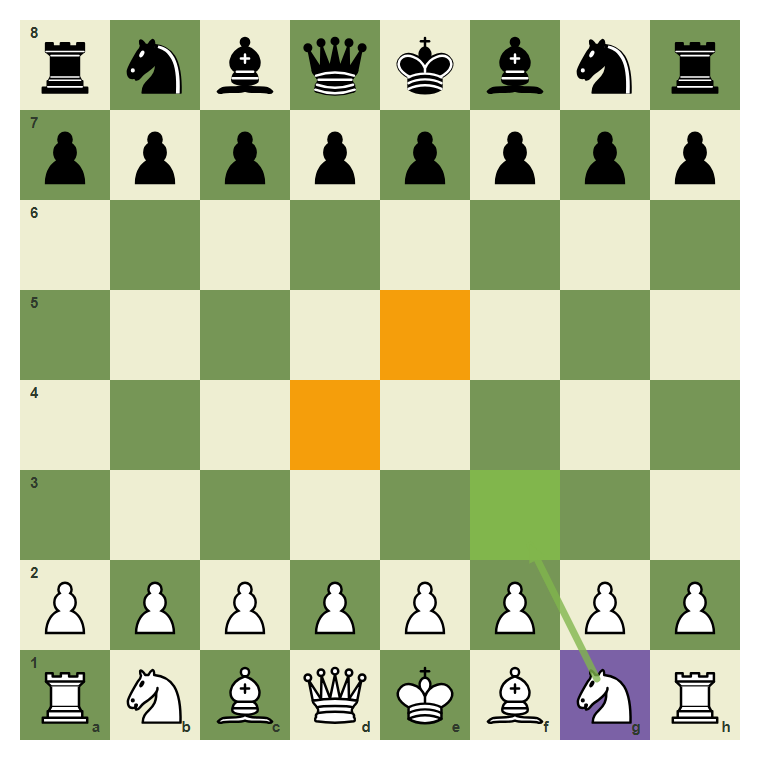
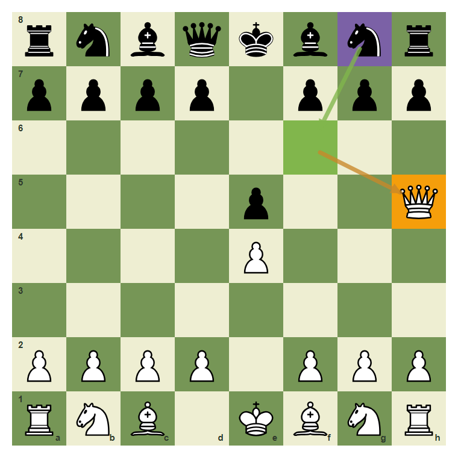
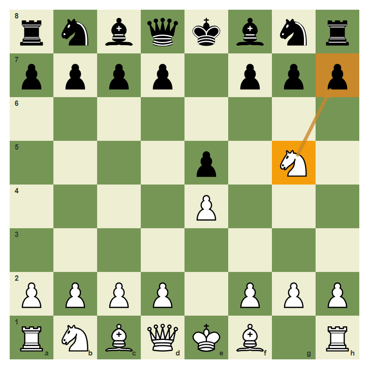
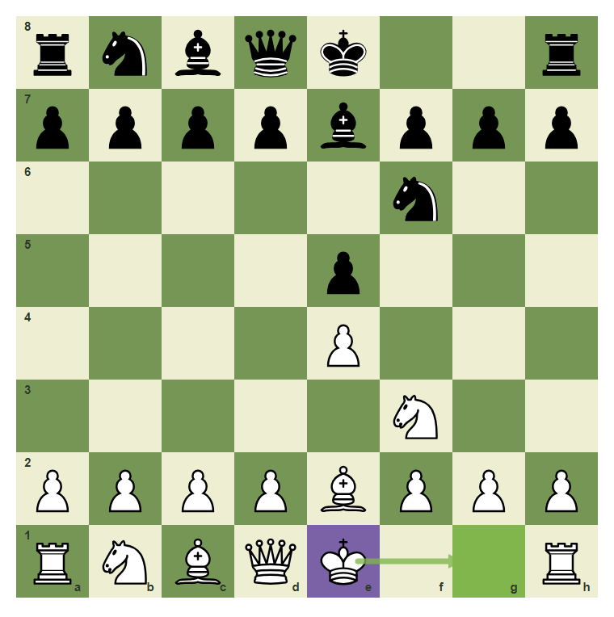
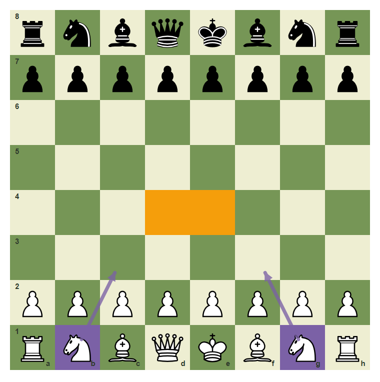
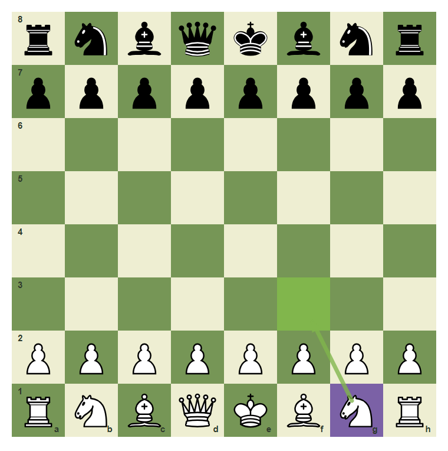

Opening Safety: Stop Moving The Same Piece
Develop, protect the king, and avoid early queen adventures.
- Develop pieces toward useful squares.
- Avoid moving one piece repeatedly without reason.
- Recognize why early queen moves can lose time.
Do Not Lose Before The Game Starts
Opening survival is simple: control the center, develop pieces, protect the king, and do not chase tricks with the same piece again and again.
Develop toward the center

The knight move g1-f3 helps control central squares.
Early queen moves invite tempo

The queen on h5 can be attacked by a developing knight.
Moving one piece repeatedly costs time

The knight on g5 moved early and can become a target.
King safety is part of development

When the path is clear and safe, castling protects the king.
The opening safety checklist

Center, development, king safety. These three ideas beat most beginner opening traps.
Play a safe developing move
Develop the knight from g1 to f3.

Common mistake: bring the queen out too early
If your queen becomes a target, the opponent develops while attacking it.

The knight move g8-f6 attacks h5 with tempo.
Chapter Checkpoint
A safe opening move often:
A safe opening move often:
Early queen moves can lose:
Early queen moves can lose:
Opening survival includes:
Opening survival includes: